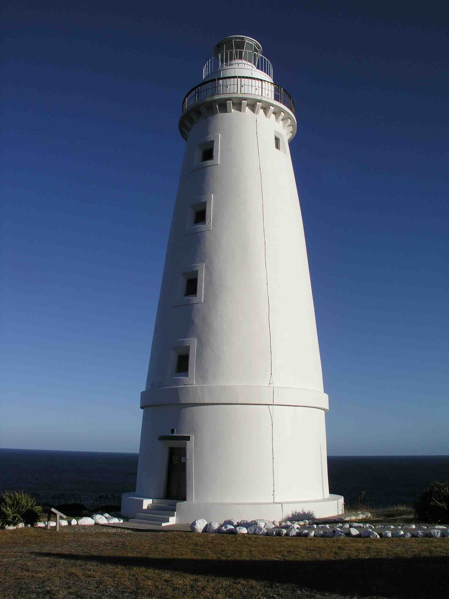
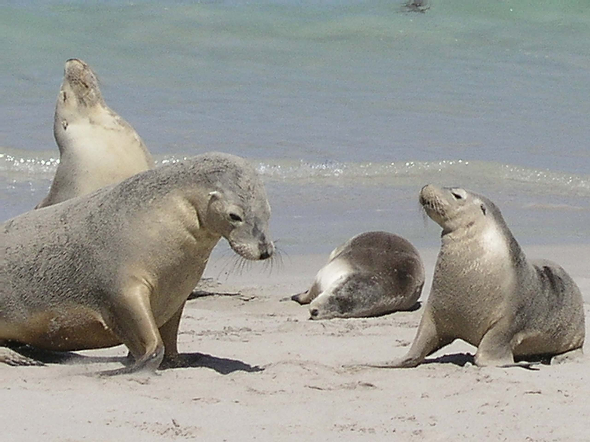

Possum on a Hot Tin Roof
Kangaroo Island, Australia
As soon as we arrived on Kangaroo Island we sensed the remoteness of Australia’s third largest island. Just 45 minutes by ferry from the South Australian coast and the grocery store had sold out of potatoes and wouldn’t have their next delivery until next week!
We headed straight to our lighthouse keeper’s cottage on the easternmost tip of the island – Cape Willoughby. Cape Willoughby is 30km away from the nearest pint of milk along a bumpy dirt track. This was exactly the break we needed from the hustle and bustle of Sydney!
Our cottage was so inviting - gleamingly whitewashed with a rosy red roof, bright and airy inside and right beneath the sparkling white lighthouse. We sat out on a veranda that evening – with our companions, Viv and Heleyne, and a nice bottle of red purchased on a recent trip to the Barossa Valley – and watched the turquoise sea smashing against the precipitous cliffs below the cottage.
We only spent a couple of nights out at Cape Willloughby. Our next four nights were spent at the lighthouse keeper’s cottage at the westernmost point of the island - Cape du Couedic. We didn’t warm to this place quite so much as it was a little spooky and our sleep was disturbed nightly by mice tap-dancing on the polished kitchen floorboards and nightly replays of “Possum on a Hot Tin Roof.’ starring just about every possum in the vicinity! But, the wallabies and goannas hanging around the backdoor endeared the place to us!!
We spent most of our time on this side of the island out walking and enjoying the warm fresh air. One morning we headed out on the ‘Snake Lagoon’ walk. This took us along a dried up river bed (where we keep our eyes open for any signs of the creature the walk was named after!) and out to a golden sandy beach – the stuff that dreams of paradise are made of and with not a soul apart from ourselves for miles around. The four of us tucked into a sandy picnic and then dozed on the sand under the warm sun for the duration of the afternoon.
Heleyne celebrated her birthday on the island with a quad biking trip on 500 acres of land at Vivonne Bay (voted Australia’s No.1 beach). The tour leader gave us brief (very brief) instructions and then let us loose. We sped down kangaroo tracks as the day began to dim, watched by literally hundreds of roos and wallabies who bounded away as we drew near. We saw snake tracks, watched the world’s most placid bees (Liguarian) working away in their hives, saw Goanna nests and had just such fun!
Kangaroo Island is one of the most special spots we have found in Australia. It is abounding with wildlife – everywhere we went there were kangaroos, wallabies, goannas, possums, seals and koalas. It has tonnes of spectacular scenery and gives you a real taste of the wilderness. We would love to go back sometime – but then Australia is such a big place and we still have so many places left to discover.
See this article from the UK's Independent:
http://news.independent.co.uk/world/australasia/story.jsp?story=499034
We headed straight to our lighthouse keeper’s cottage on the easternmost tip of the island – Cape Willoughby. Cape Willoughby is 30km away from the nearest pint of milk along a bumpy dirt track. This was exactly the break we needed from the hustle and bustle of Sydney!
Our cottage was so inviting - gleamingly whitewashed with a rosy red roof, bright and airy inside and right beneath the sparkling white lighthouse. We sat out on a veranda that evening – with our companions, Viv and Heleyne, and a nice bottle of red purchased on a recent trip to the Barossa Valley – and watched the turquoise sea smashing against the precipitous cliffs below the cottage.
We only spent a couple of nights out at Cape Willloughby. Our next four nights were spent at the lighthouse keeper’s cottage at the westernmost point of the island - Cape du Couedic. We didn’t warm to this place quite so much as it was a little spooky and our sleep was disturbed nightly by mice tap-dancing on the polished kitchen floorboards and nightly replays of “Possum on a Hot Tin Roof.’ starring just about every possum in the vicinity! But, the wallabies and goannas hanging around the backdoor endeared the place to us!!
We spent most of our time on this side of the island out walking and enjoying the warm fresh air. One morning we headed out on the ‘Snake Lagoon’ walk. This took us along a dried up river bed (where we keep our eyes open for any signs of the creature the walk was named after!) and out to a golden sandy beach – the stuff that dreams of paradise are made of and with not a soul apart from ourselves for miles around. The four of us tucked into a sandy picnic and then dozed on the sand under the warm sun for the duration of the afternoon.
Heleyne celebrated her birthday on the island with a quad biking trip on 500 acres of land at Vivonne Bay (voted Australia’s No.1 beach). The tour leader gave us brief (very brief) instructions and then let us loose. We sped down kangaroo tracks as the day began to dim, watched by literally hundreds of roos and wallabies who bounded away as we drew near. We saw snake tracks, watched the world’s most placid bees (Liguarian) working away in their hives, saw Goanna nests and had just such fun!
Kangaroo Island is one of the most special spots we have found in Australia. It is abounding with wildlife – everywhere we went there were kangaroos, wallabies, goannas, possums, seals and koalas. It has tonnes of spectacular scenery and gives you a real taste of the wilderness. We would love to go back sometime – but then Australia is such a big place and we still have so many places left to discover.
See this article from the UK's Independent:
http://news.independent.co.uk/world/australasia/story.jsp?story=499034

Cape Willoughby Lightstation

\"This, I would say, is my best side\

Snake Lagoon - No Freak Waves in sight today - 26 Feb 04

Australian sealions at Seal Bay - 25 Feb 2004

Us two on the Remarkable Rocks - 28 Feb 04